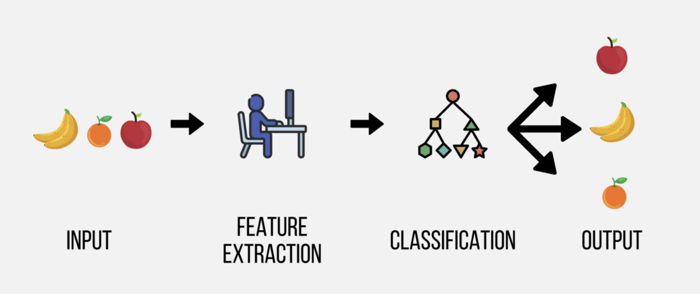

Deep Learning 101
What’s Deep Learning
พิจารณา neural network ต่อไปนี้

จากรูปจะเห็นว่า neural network ประกอบด้วยส่วนประกอบหลัก เรียกว่า layer จำนวน 3 ส่วนได้แก่
input layer
hidden layer
output layer


ทบทวน AI vs ML vs DL
ปัจจุบันมีการใช้คำว่า AI, ML และ DL แทนกันไปมาจนบางครั้งเหมือนว่าจะเป็นคำเดียวกัน ในความเป็นจริงทั้งสามคำดังกล่าวม่ได้เป็นสิ่งเดียวกันเลยทีเดียว แต่มีทั้งส่วนที่เหมือนและแตกต่างกัน รายละเอียดมีดังนี้
AI ย่อมาจาก Artificial Intelligent เป็นเทคนิคหรือวิธีการที่นักวิทยาการข้อมูลใช้เพื่อพัฒนาโปรแกรมคอมพิวเตอร์ รวมถึงหุ่นยนต์หรือจักรกลที่สามารถเลียนแบบการทำงานต่าง ๆ ของมนุษย์ได้ AI จะมีความสามารถในการทำงานใกล้เคียงหรือดีกว่ามนุษย์ ทั้งความสามารถในการจดจำ จำแนก และตัดสินใจดำเนินงานเองโดยอาศัยข้อมูลที่เป็นไปได้ทั้งข้อมูลตัวเลข ข้อความ รูปภาพ และเสียง ตัวอย่างของ AI เช่น รถยนต์หรือยานพาหนะไร้คนขับ, AlphaGo - DeepMind, Chatgpt เป็นต้น
Machine Learning (ML) เป็นกลุ่มของเทคนิคหรือศาสตร์ย่อยแขนงนึงภายใต้ AI ที่เกี่ยวข้องกับการใช้ประยุกต์ใช้ทฤษฎีทางสถิติและคณิตศาสตร์เพื่อเรียนรู้หรือสกัดสารสนเทศจากข้อมูล สารสนเทศดังกล่าวสามารถนำมาใช้ได้หลายลักษณะ ทั้งการบรรยาย อธิบาย ทำนาย และตัดสินใจ ML ถือเป็นส่วนประกอบที่สำคัญที่สนับสนุนการทำงานของ AI
Deep Learning (DL) เป็นแขนงย่อย (subdivision) ของ ML ที่เกี่ยวข้องกับการใช้เทคนิคที่เรียกว่าเครือข่ายประสาทเทียม (artificial neural network: ANN) ที่มีความลึกของเครือข่ายหลายชั้นเพื่อเรียนรู้หรือสกัดสารสนเทศจากข้อมูลและใช้ในวัตถุประสงค์หลักคือเพื่อทำนาย/จำแนกค่าสังเกตของตัวแปรตาม นอกจากนี้ลักษณะเฉพาะตัวที่โดดเด่นของ DL คือเครือข่ายประสาทเทียมที่ใช้ในการเรียนรู้นั้นถูกพัฒนาขึ้นเลียนแบบการทำงานของเซลล์เครือข่ายสมองของมนุษย์ การเรียนรู้ของเครื่องที่ใช้ DL จึงสามารถเรียนรู้ข้อมูลที่มีความซับซ้อนเช่น ข้อความ ภาพ และเสียงได้มีประสิทธิภาพมากกว่าการใช้เทคนิค ML แบบปกติ
จากความหมายในข้างต้นจะเห็นว่า DL ถือเป็น machine learning ตัวหนึ่งที่ใช้ในวัตถุประสงค์เพื่อทำนายหรือจำแนกค่าสังเกตของตัวแปรตาม เมื่อเปรียบเทียบความแตกต่างระหว่าง machine learning algorithm ในกลุ่มที่ใช้สำหรับทำนาย กับ DL มีความแตกต่างหนึ่งที่เห็นได้อย่างชัดเจนคือในส่วนของกระบวนการเรียนรู้ของโมเดล ดังรูปด้านล่าง


จากรูปข้างต้นจะเห็นว่า ทั้ง ML และ DL เป็นเครื่องมือที่มีวัตถุประสงค์เดียวกันคือเพื่อทำนาย หรือจำแนกประเภทของหน่วยข้อมูล โดยใช้ข้อมูลจากตัวแปรอิสระที่มี การพัฒนาโมเดลทำนายมีกระบวนการที่จะต้อง train และตรวจสอบประสิทธิภาพของโมเดลเหมือนกัน แต่ส่วนที่มีความแตกต่างกันอย่างชัดเจนระหว่าง ML กับ DL คือ การพัฒนาโมเดลประเภท ML ผู้วิเคราะห์จะต้องเป็นผู้ดำเนินการสำรวจ คัดเลือก รวมทั้งเตรียมข้อมูลของตัวแปรอิสระที่จะใช้ในโมเดลทำนายด้วยตนเอง เรียกขั้นตอนนี้ว่า feature extraction ในขณะที่ DL เป็นโมเดลแบบเครือข่ายประสาทเทียมที่มีชั้นของการเรียนรู้หรือประมวลผลข้อมูลหลายชั้น ทำให้สามารถผนวกส่วนของการทำ feature extraction และส่วนของการทำนายเอาไว้ภายในโมเดล DL เดียวกันได้ และมีแนวโน้มที่จะช่วยให้ผู้วิเคราะห์สามารถใช้ประโยชน์ได้จากข้อมูลที่มีปริมาณมาก ๆ ได้อย่างสูงสุด
Artificial Neural Network
ดังที่กล่าวในข้างต้นว่าโมเดลการเรียนรู้เชิงลึกเป็นกลุ่มของโมเดลทำนายที่จัดอยู่ในโมเดลประเภทโครงข่ายประสาทเทียม (artificial neural network: ANNs) ดังนั้นในหัวข้อนี้จะกล่าวถึงความรู้พื้นฐานที่จำเป็นต้องทราบเกี่ยวกับ ANN ก่อนรายละเอียดมีดังนี้
Simple artificial neural
หรืออาจเรียกว่า perceptron เป็นโมเดลตัวพื้นฐานมากที่สุดในกลุ่มของ ANN รูปด้านล่างแสดงโครงสร้างของ perceptron model ดังกล่าว จากรูปจะเห็นว่าโมเดลประกอบด้วยส่วนประกอบหลัก 3 ส่วนได้แก่
พัฒนาการของ DL
The history of deep learning can be traced back to the early days of artificial intelligence and has gone through several key milestones and developments. Here is an overview of the history of deep learning and some of its recent advancements:
Early neural networks (1940s-1960s):
The foundation of deep learning was laid by the development of artificial neural networks, inspired by the structure and function of biological neurons in the brain.
The first simple artificial neuron, called the perceptron, was introduced by Frank Rosenblatt in 1958. It could learn to perform simple binary classification tasks.
Backpropagation algorithm (1970s-1980s):
In 1974, Paul Werbos introduced the backpropagation algorithm, a key technique for training multi-layer neural networks.
In 1986, David Rumelhart, Geoffrey Hinton, and Ronald J. Williams popularized the backpropagation algorithm in their seminal paper, which became the cornerstone of modern deep learning.
The AI winter (1980s-1990s):
During this period, AI research faced skepticism and a lack of funding due to unfulfilled promises and the limitations of early neural networks.
However, some researchers continued to work on neural networks, leading to advancements such as the development of Convolutional Neural Networks (CNNs) by Yann LeCun in 1989, which laid the groundwork for image recognition tasks.
Revival and the rise of deep learning (2000s):
The term “deep learning” was coined by Geoffrey Hinton and his colleagues in the early 2000s, referring to neural networks with many layers.
Key factors in the revival of deep learning include the availability of large-scale datasets, advances in computational hardware (such as GPUs), and new algorithms that improved training efficiency.
Recent developments (2010s-present):
In 2012, Alex Krizhevsky, Ilya Sutskever, and Geoffrey Hinton achieved a breakthrough in image recognition with their deep CNN called AlexNet, which significantly outperformed other methods in the ImageNet challenge.
Since then, deep learning has made significant progress in various domains, such as natural language processing (e.g., transformers like BERT and GPT), speech recognition, and reinforcement learning (e.g., DeepMind’s AlphaGo).
New architectures, techniques, and applications continue to emerge, such as Generative Adversarial Networks (GANs), unsupervised learning, and transfer learning.
The history of deep learning has seen both periods of rapid advancement and stagnation. However, in recent years, deep learning has become a dominant force in AI research, leading to groundbreaking achievements and applications across a wide range of fields.
ความรู้พื้นฐาน
เนื้อหาส่วนนี้จะอธิบายโครงสร้างของโมเดลโครงข่ายประสาทเทียม (artificial neural network: ANN) หรือที่เรียกว่า perceptron model ซึ่งเป็นพื้นฐานความรู้ที่สำคัญสำหรับการศึกษาการเรียนรู้เชิงลึก